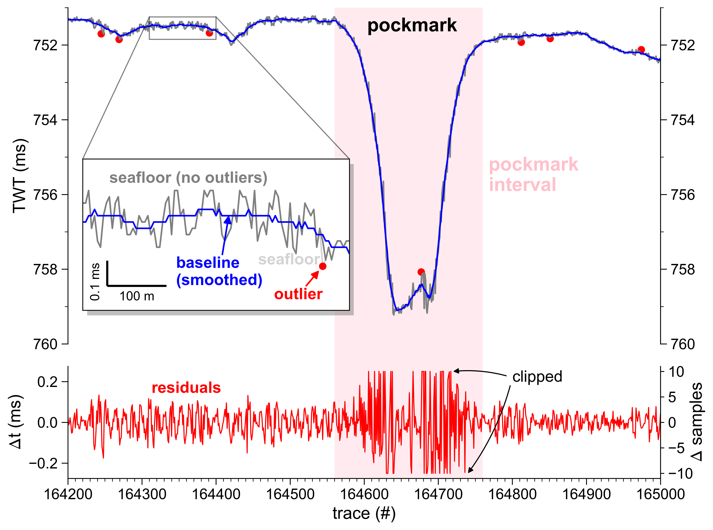

Static correction#
Compensate static effect of 2D profiles.
Description#
Compensate residual static (e.g. swell) on seismo-acoustic profile(s) using either SourceWaterDepth (mode: swdep) or first positive amplitude peak of seafloor reflection (mode: amp).
- Retrieve seafloor reflection TWT values from
swdep: SourceWaterDepth stored in trace header (originating from simultaneously operating multibeam echosounder)amp: detected seafloor amplitude
- Filter outlier from seafloor TWT values using a rolling double medium absolute deviation (MAD) filter

Seafloor reflection detection (first-break picking)#
The basis for an sufficient static correction is a precise detection of the seafloor reflection amplitudes. Here, the STA/LTA ratio method commonly used in seismology is adapted. It uses the ratio of averages between a short-term and a long-term window, which is denoted as STA/LTA (short-term average/long-term average).
This method uses 1% and 5% of the total trace length for the determination of the short-term and long-term window length, respectively. Based on a first (rought) first break pick, a narrow time window (\(\pm\) 50 samples around picked time) is defined and the shallowest (i.e. smallest two-way travel time) of the five largest amplitudes flagged as the seafloor amplitude.
These picks are filtered and used to calculate the residual statics in subsequent steps.
Median Absolute Deviation (MAD)#
The medium absolute deviation (MAD) is a measure of variability and can be used as a robust alternative for an outlier detection algorithm based on the more common standard deviation \(\sigma\) (see Wikipedia). The MAD is defined as the median of the absolute deviations from the data median:
where \(x_{i}\) are the data values, \(\bar{x}\) the data median value and \(c\) is a constant, with \(c = 1.4826\) for normally distributed values. The lower and upper threshold values \(T\) for the outlier detection are computed as follows:
where \(k = 3\) corresponds to the \(3\sigma\) rule commonly used in threshold-based outlier detection.
The assumption of a normal distribution, however, is often not suitable for real world datasets. In order to account for skewed distributions when detecting outliers, a double MAD algorithm has been proposed (Rosenmai, 2013). This simple approach includes the separate computation of a lower and upper MAD for values below and above the median:
$$
\displaylines{ MAD^{lower} = c * median(|x_i^{lower} - \bar{x}|) \ MAD^{upper} = c * median(|x_i^{upper} - \bar{x}|) } $$
Consequently, the thresholds for the outlier detection change based on the corresponding MAD:
Here, the MAD is used to identify and remove outliers from the picked seafloor horizon (red dots, Figure).
Smoothing filter#
The seafloor horizon is low-passed filtered using a Savitzky-Golay filter (Savitzky and Golay, 1964) to derive a smooth version closely representing the seafloor unaffected by static (solid blue line, Figure). One advantage of this filter is its capability to efficiently smooth data without distorting the underlying signal. The efffect of residual static is calculated as the difference between observed, non-smoothed and filtered, smoothed seafloor horizon (red line, Figure).
Usage#
This script is designed to be used from the terminal (i.e. command line).
Command line interface#
The script can handle three different inputs:
- single SEG-Y file (e.g.,
filename.sgy) - datalist of files to process (e.g.,
datalist.txt) - directory with input files (e.g.,
/input_dir)
There are two options to run the script. We recommend using the CLI entry point like:
Alternatively, the script can be executed using the (more verbose) command:
>>> python -m pseudo_3D_interpolation.static_correction_segy {filename.sgy | datalist.txt | </directory>} [optional parameters]
Optionally, the following parameters can be specified:
--help,-h: Show help.--output_dir {DIR}: Output directory (either--inplaceor--output_dirare required!).--inplace: Replace input data without creating copy (either--inplaceor--output_dirare required!).--suffix {sgy}: File suffix (default:sgy). Only used if directory is specified.--filename_suffix {SUFFIX}: Filename suffix (e.g.pad,static) to filter input files. Only used if directory is specified.--txt_suffix {despk}: Suffix to append to output filename (default:despk).--use_delay: Use delay recording time to split input data before despiking (e.g. for TOPAS, Parasound).--byte_delay {109}: Byte position of input delay times in SEG-Y file(s) (default:109).--mode {amp}: Mode used to correct residual static (default:amp).amp: detected seafloor amplitudeswdep: stored SourceWaterDepth from trace header (if available).
--win_mad {TRACES}: Moving window length for MAD filter (traces [#]).--win_sg {7}: Moving window length for Savitzky-Golay smoothing filter (traces [#]).--limit_shift: Limit maximum vertical shift of individual traes (in samples)--limit_depressions: Limit maximum vertical shift in area of seafloor depressions using a transition zone [pad, max_edges, max_center] (as integer)- default:
[10, 10, 5]
- default:
--write_seafloor2trace: If mode isampwrite TWT of peak seafloor amplitude to SEG-Y trace header--write_aux: Write trace information and computed static to auxiliary file (*.sta)--verbose {LEVEL},-V: Level of output verbosity (default:0).
References#
- Rosenmai, Peter (2013) Using the Median Absolute Deviation to Find Outliers, https://eurekastatistics.com/using-the-median-absolute-deviation-to-find-outliers/, last accessed: 27 June 2022
- Savitzky, A., & Golay, M. J. (1964). Smoothing and differentiation of data by simplified least squares procedures. Analytical chemistry, 36(8), 1627-1639.